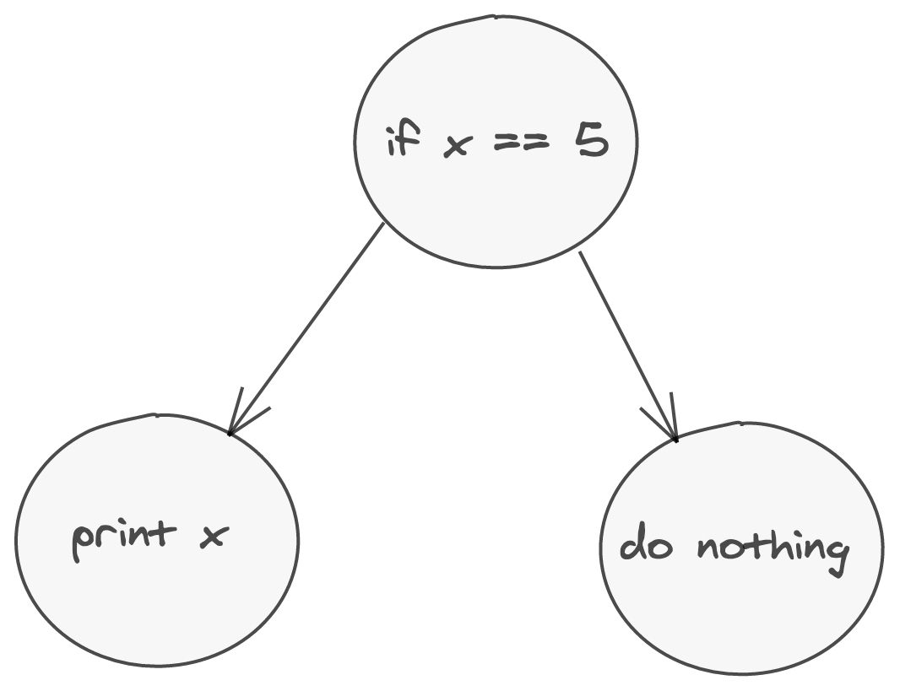

Refactoring is a disciplined technique for restructuring an existing body of code, altering its internal structure without changing its external behavior. Its heart is a series of small behavior preserving transformations.
Two different ways of representing this AST. 
With parsers
(Specifically parser combinators)
Here’s a JSON parser definition:
fn parse_hash<'a>(
i: &'a str,
) -> IResult<&'a str, HashMap<String, JsonValue>, VerboseError<&'a str>> {
context(
"map",
preceded(
char('{'),
cut(terminated(
map(
separated_list0(preceded(parse_whitespace, char(',')), key_value),
|tuple_vec| {
tuple_vec
.into_iter()
.map(|(k, v)| (String::from(k), v))
.collect()
},
),
preceded(parse_whitespace, char('}')),
)),
),
)(i)
}fn json_value<'a>(i: &'a str) -> IResult<&'a str, JsonValue, VerboseError<&'a str>> {
preceded(
parse_whitespace,
alt((
map(parse_hash, JsonValue::Object),
map(parse_array, JsonValue::Array),
map(parse_string, |s| JsonValue::Str(s.to_string())),
map(double, JsonValue::Num),
map(parse_bool, JsonValue::Boolean),
)),
)(i)
}We throw all of the parsers together, and then define the general structure of our JSON:
JSON can start with a hash (an object) or a alternatively, an array. We don’t care about whitespace at all.
We can use parser combinators to create a general language for refactoring: Let’s see it in action.
Let’s try replacing the fields of a rust struct with shorthand syntax:
What about in Ruby?
Replace with shorthand symbol syntax:
Multiline version:
We also have to fix all callers:
How about in C?
Use the docs:
Installating comby?